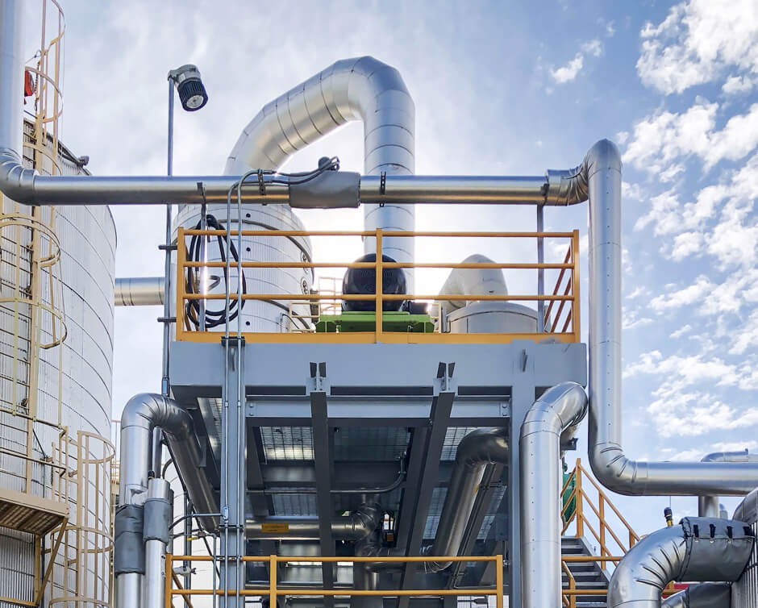

Responsible
We take full ownership of our commitments and deliver solutions that prioritize environmental sustainability and social responsibility.
Turnkey Ethanol plants, delivered worldwide.
Pune-based EPC company delivering turnkey ethanol, distillery and industrial plants. 85+ projects worldwide.
Our business linesHover a segment to explore
Founded in 2010 and headquartered in Pune, India, Mega Engineering brings together more than a decade of exhaustive experience with a strong desire to provide innovative solutions tailored to processes and projects across the globe.
Starting as a distillery services and equipment supplier, Mega has now become a trusted provider for industries including bioethanol, wastewater treatment, chemical processing, brewery equipment and critical process equipment manufacturing.
With a long list of products and never-ending customer support, we guarantee a very high level of satisfaction for our clients. We offer the best line of services with the latest technology and equipment.
Why choose Mega
We take full ownership of our commitments and deliver solutions that prioritize environmental sustainability and social responsibility.
Our proven track record of on-time delivery and consistent quality makes us the trusted partner for critical engineering projects.
We go beyond expectations to ensure every project succeeds, providing ongoing support and maintaining long-term partnerships.
Comprehensive solutions for Extra Neutral Alcohol, Anhydrous Alcohol, Rectified Spirit and Pharma Grade Alcohol production systems with cutting-edge distillation technology.
Advanced Multiple Effect Evaporation (MEE) plants and drying systems for various process industries with superior energy efficiency and performance.
Revolutionary wastewater treatment systems that minimize discharge and maximize water recovery for sustainable and environmentally responsible operations.
Systems that recover and purify process solvents for reuse, cutting raw-material consumption and waste for chemical and pharmaceutical processes.
Modular skid-mounted plant supply reduces project execution time and minimizes site work significantly.
Custom-engineered process equipment manufacturing with in-house capabilities and detailed engineering expertise for specialized industrial applications.
Complete end-to-end solutions for Biogas and BioCNG production, purification, compression and distribution systems for clean transportation fuel.
Plants that capture, purify and liquefy CO₂ from fermentation for industrial and food-grade use, turning a by-product into a revenue stream.
State-of-the-art brewing equipment and complete turnkey brewery solutions from small craft operations to large-scale commercial facilities.
Click or hover a stage to see what happens there. Mega engineers every stage, including the water and by-product loops.
We guide you through every step with precision and expertise.
In-depth analysis of your requirements and feasibility studies
Custom engineering design and detailed project planning
Strategic sourcing of premium materials and equipment
Expert installation and rigorous quality control
Complete testing, training and successful handover
Explore our engineering achievements.
We are a world-class engineering manufacturer providing the highest quality products, services and solutions to our customers worldwide.
We strive to ensure delivery of plants well before scheduled time. Our modular skid-mounted plant supply reduces project execution time and minimizes site work significantly.
Robust, reliable and highly efficient technology tailored to your specific needs, ensuring processes fit local conditions and feedstock quality requirements.
With 110+ qualified engineers and professionals on board, we excel at providing state-of-the-art, tailor-made, efficient solutions to our growing global customer base.
With more than 15 years of experience and a considerable number of innovative achievements, Mega has completed more than 85 industrial projects in multiple industrial sectors across the globe. Our expertise spans biofuels, wastewater treatment, chemical processing, brewery equipment and critical process equipment manufacturing.
Tap any image to view it full-size.
Follow our latest posts. Tap a post to read, like, save or share it.
Ready to transform your vision into reality? Let's build the future together.
Answer a few quick steps. Our Pune team replies within one working day.